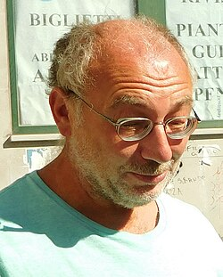

Alexander Beilinson | |
|---|---|
 Beilinson in 2016 | |
| Born | June 13, 1957 Moscow, Soviet Union |
| Known for | Beilinson conjectures Beilinson element Beilinson regulator Beilinson–Bernstein localization Beilinson–Lichtenbaum conjecture Beilinson–Parshin conjecture Chiral algebra Chiral homology Decomposition theorem Lie-* algebra Perverse sheaves t-structure Tate vector space |
| Children | Helen; Vera |
| Awards | Ostrowski Prize (1999) Wolf Prize (2018) Shaw Prize (2020) |
| Scientific career | |
| Fields | Mathematics |
| Institutions | University of Chicago |
| Yuri I. Manin | |
Doctoral students | Lorenzo Ramero |
.jpg){kind=link}
Alexander A. Beilinson (born 1957) is the David and Mary Winton Green University professor at the University of Chicago and works on mathematics. His research has spanned representation theory, algebraic geometry and mathematical physics. In 1999, Beilinson was awarded the Ostrowski Prize with Helmut Hofer. In 2017, he was elected to the National Academy of Sciences.[1] In 2018, he received the Wolf Prize in Mathematics[2] and in 2020 the Shaw Prize in Mathematics.[3]
Early life and education
Beilinson was born in Moscow of mostly Russian descent while his paternal grandfather was Jewish. Nevertheless he was discriminated because of his Jewish surname, and was not admitted to Moscow State University. He went to the Pedagogical Institute instead and transferred to Moscow State University when he was a third year student.[4]
Work
In 1978, Beilinson published a paper on coherent sheaves and several problems in linear algebra. His two-page note in the journal Functional Analysis and Its Applications was one of the papers on the study of derived categories of coherent sheaves.
In 1981, Beilinson announced a proof of the Kazhdan–Lusztig conjectures and Jantzen conjectures with Joseph Bernstein. Independent of Beilinson and Bernstein, Brylinski and Kashiwara obtained a proof of the Kazhdan–Lusztig conjectures.[5] However, the proof of Beilinson–Bernstein introduced a method of localization. This established a geometric description of the entire category of representations of the Lie algebra, by "spreading out" representations as geometric objects living on the flag variety. These geometric objects naturally have an intrinsic notion of parallel transport: they are D-modules.
In 1982, Beilinson published his own conjectures about the existence of motivic cohomology groups for schemes, provided as hypercohomology groups of a complex of abelian groups and related to algebraic K-theory by a motivic spectral sequence, analogous to the Atiyah–Hirzebruch spectral sequence in algebraic topology. These conjectures have since been dubbed the Beilinson-Soulé conjectures; they are intertwined with Vladimir Voevodsky's program to develop a homotopy theory for schemes.
In 1984, Beilinson published the paper Higher Regulators and values of L-functions, in which he related higher regulators for K-theory and their relationship to L-functions. The paper also provided a generalization to arithmetic varieties of the Lichtenbaum conjecture for K-groups of number rings, the Hodge conjecture, the Tate conjecture about algebraic cycles, the Birch and Swinnerton-Dyer conjecture about elliptic curves, and Bloch's conjecture about K2 of elliptic curves.
Beilinson continued to work on algebraic K-theory throughout the mid-1980s. He collaborated with Pierre Deligne on the developing a motivic interpretation of Don Zagier's polylogarithm conjectures.
From the early 1990s onwards, Beilinson worked with Vladimir Drinfeld to rebuild the theory of vertex algebras. After some informal circulation, this research was published in 2004 in a form of a monograph on chiral algebras. This has led to new advances in conformal field theory, string theory and the geometric Langlands program. He was elected a Fellow of the American Academy of Arts and Sciences in 2008.[6] He was a visiting scholar at the Institute for Advanced Study in the fall of 1994 and again from 1996 to 1998.[7]
Selected publications
- Beilinson, A. A.; Drinfeld, V. (2004). Chiral Algebras. American Mathematical Society. ISBN 978-0-8218-3528-9.
- Beilinson, A. A.; Ginzburg, V.; Soergel, W. (1996). "Koszul duality patterns in representation theory". Journal of the American Mathematical Society. 9 (2): 473–527. doi:10.1090/S0894-0347-96-00192-0. ISSN 0894-0347.
- Beilinson, A. A.; Lusztig, G.; MacPherson, R. (1990). "A geometric setting for the quantum deformation of GLn". Duke Mathematical Journal. 61 (2): 655–677. doi:10.1215/S0012-7094-90-06124-1. ISSN 0012-7094.
- Beilinson, A. A.; Ginzburg, V.; Schechtman, V. (1988). "Koszul duality". Journal of Geometry and Physics. 5 (3): 317–350. Bibcode:1988JGP.....5..317B. doi:10.1016/0393-0440(88)90028-9. ISSN 0393-0440.
- Beilinson, A. A. (1987). "How to glue perverse sheaves". K-theory, arithmetic and geometry (Manin seminar, Moscow, 1984--1986) in Lecture Notes in Math. Vol. 1289. Springer-Verlag. pp. 42–51.
- Beilinson, A. A. (1987). "On the derived category of perverse sheaves". K-theory, arithmetic and geometry (Manin seminar, Moscow, 1984—1986) in Lecture Notes in Math. Vol. 1289. Springer-Verlag. pp. 27–41.
- Beilinson, A. A.; MacPherson, R.; Schechtman, V. (1987). "Notes on motivic cohomology". Duke Mathematical Journal. 54 (2): 679–710. doi:10.1215/S0012-7094-87-05430-5. ISSN 0012-7094.
- Beilinson, A. A. (1986). "Notes on absolute Hodge cohomology". Applications of algebraic K-theory to algebraic geometry and number theory, Part I, II (Boulder, Colo., 1983), Contemporary Mathematics. Vol. 55. American Mathematical Society. pp. 35–68.
- Beilinson, A. A. (1984). "Higher regulators and values of L-functions". Itogi Nauki i Tekhniki, Current problems in mathematics. Vol. 24. Akad. Nauk SSSR Vsesoyuz. Inst. Nauchn. i Tekhn. Inform., Moscow. pp. 181–238.
- Beilinson, A. A.; Bernstein, J.; Deligne, P. (1982). "Faisceaux pervers". Analysis and topology on singular spaces, I (Luminy, 1981), Astèrisque. Vol. 100. Soc. Math. France, Paris. pp. 5–171.
- Beilinson, A. A. (1980). "Residues and adèles". Funktsional. Anal. I Prilozhen. 14 (1): 44–45. ISSN 0374-1990.
- Beilinson, A. A. (1978). "Coherent sheaves on Pn and problems in linear algebra". Funktsional. Anal. I Prilozhen. 12 (3): 68–69. doi:10.1007/BF01681436. ISSN 0374-1990. S2CID 122566865.
References
- ^ National Academy of Sciences Members and Foreign Associates Elected, National Academy of Sciences, May 2, 2017.
- ^ "Paul McCartney among 9 Wolf Prize recipients". The Jerusalem Post | JPost.com. 12 February 2018. Retrieved May 21, 2020.
- ^ "The Shaw Prize". www.shawprize.org. Retrieved May 21, 2020.
- ^ Fuchs, Dmitry. "On Soviet Mathematics of the 1950s and 1960s" (PDF). pp. 215–216.
- ^ Brylinski, Jean-Luc; Kashiwara, Masaki (October 1981). "Kazhdan-Lusztig conjecture and holonomic systems". Inventiones Mathematicae. 64 (3). Springer-Verlag: 387–410. Bibcode:1981InMat..64..387B. doi:10.1007/BF01389272. ISSN 0020-9910. S2CID 18403883.
- ^ "Book of Members, 1780–2010: Chapter B" (PDF). American Academy of Arts and Sciences. Retrieved May 30, 2011.
- ^ "Institute for Advanced Study: A Community of Scholars". Archived from the original on January 6, 2013. Retrieved May 21, 2020.